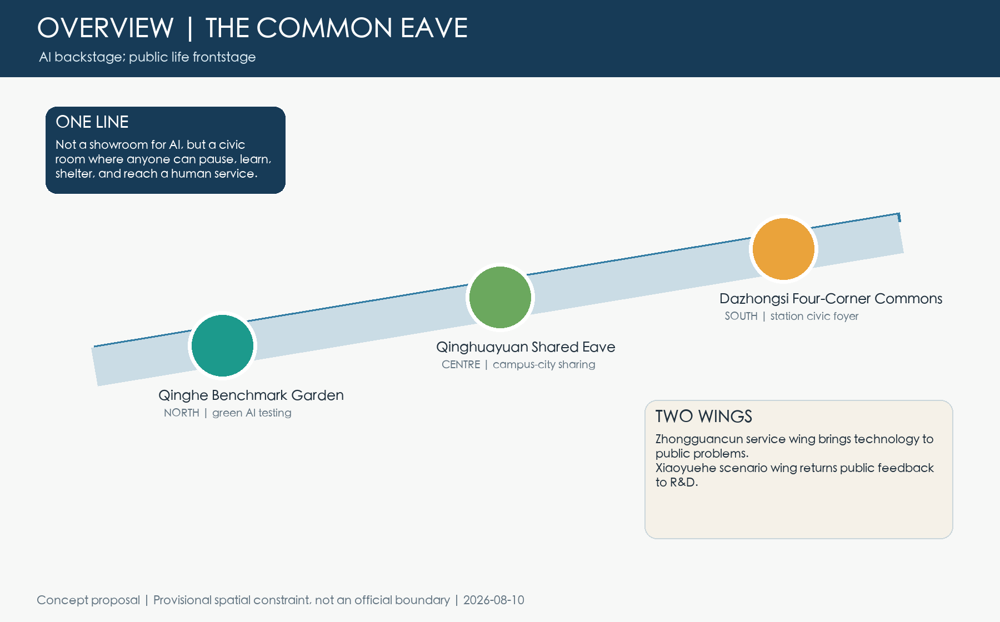
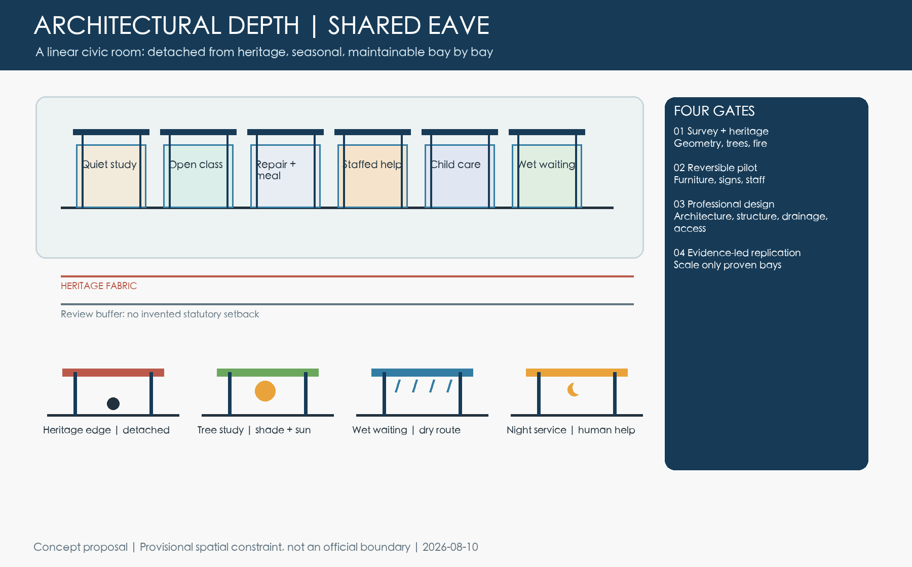
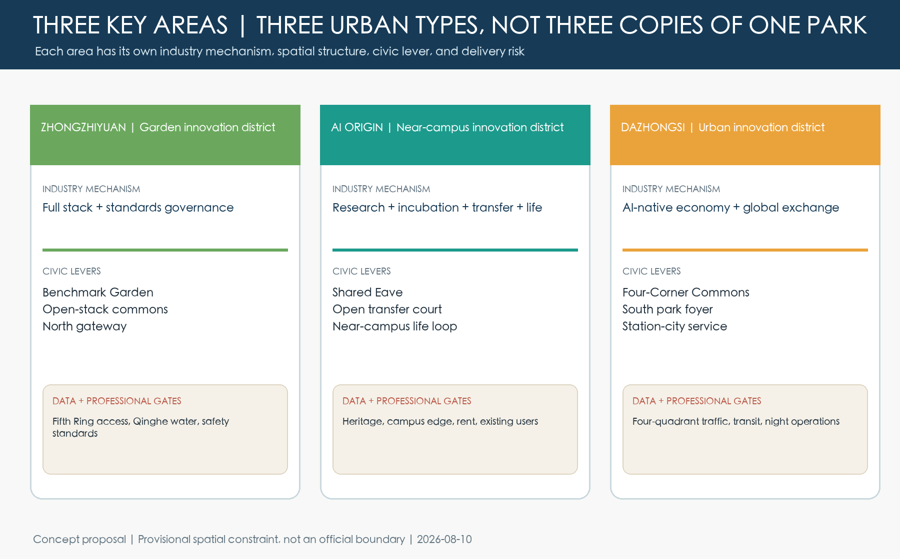
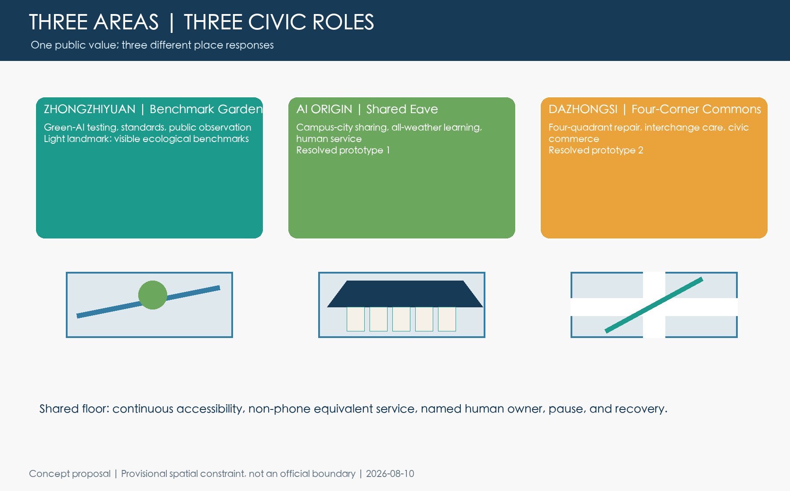
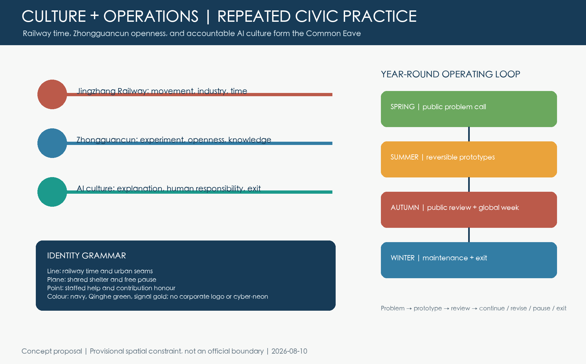

Overview map | Three-level scope | Key areas | Land use | Mobility and walking | Blue-green public space | Buildings and renewal projects | AI scenarios | Core metrics | Brief coverage
Evidence boundary: the professional spatial review passed in the declared isolated dependency environment against the fixed design Git head. The nine required GeoJSON layers remain Agent concept-design layers. Official boundaries, trees, rights, mobility, drainage, public mandate, engineering, and budgets must trigger recalculation or withdrawal.
One view of the plan and its flagships




Five-seam spatial protocol: from concept lines to ground tasks
Dazhongsi station-ground seam
Organise walking, wheelchair, bus, cycling, and logistics per exit; underground links remain a professional option.
- 1:500 per-exit plan
- 1:200 station-to-frontage section
- Rail, traffic, fire, and accessibility gates
North Third Ring waiting seam
Start with shelter, legible guidance, offline service, and visible frontage; do not draw a flyover or underpass as settled fact.
- Waiting–crossing–frontage plan
- Separate pedestrian, wheelchair, cycling conflicts
- Road-redline and traffic review
Zhichun–Jingbao heritage seam
Build on the operating heritage park with weather waiting, everyday guidance, and continuous ground rather than event scenery.
- Heritage–entrance–street plan
- Display, clear path, and maintenance layers
- Heritage, trees, lighting, drainage gates
Qinghuayuan–Wudaokou learning seam
Shared Eave connects campus, neighbourhood, and innovation frontage; test free learning, care, repair, and staffed help.
- Campus-city interface 1:500
- Eave–frontage–walk 1:200
- Rights, fire, and night-operation review
Qinghe river-garden transition
Retain vegetation signals and use a benchmark garden, rain observation, and maintenance access for a low-disturbance transition.
- River-garden–walk plan
- Rain–vegetation–pause section
- Tree, habitat, and hydrology gates
Ground-first Four-Corner Commons
Four corners serve arrival, care, exchange, and night service; the soft X is only a traffic-constrained ground relationship.
- 300 m review frame
- AM, daytime, PM, and night diagrams
- Do not extrapolate a local pressure case
Agent service contract: it can refuse and return responsibility to people
Minimum data
Only de-identified facility status and human maintenance summaries; no face, voice, precise trajectory, or sensitive profiling.
Deterministic rules
Check data, authority, operations, and route-human-review gates; reject rather than produce a plausible-looking unsafe answer.
Human final decision
The Agent sorts problems and proposes options; lawful authorities retain decisions on roads, rail, land, construction, and services.
Equivalent service
Paper schedules, static bilingual guidance, staffed enquiry, and on-site help are required equivalents for digital service.
Pause and withdraw
Participants can withdraw identifiable records; refusing a digital service never removes human service or public passage.
Failure before scale
Publish who benefited, who was missed, what failed, and whether to continue; unresolved safety or ownership means no pilot.
Identity / trajectory request
Reject identification, identifiable traces, and cross-context profiling at the data boundary.
Real signal override
Reject direct Agent control of traffic signals; require a named human and specialist review.
No human owner
Reject an ownerless automated service; pause, transfer to staff, or exit with a learning receipt.
Zero-phase public participation and evidence withdrawal
Who is invited
Residents, commuters, students and researchers, rights/operating stakeholders, maintainers, carers, people with mobility, sensory, or cognitive disabilities, and low-digital users.
How it is recorded
Use a single segment, entrance, crossing, or pause point as the spatial grain; record wait, detour, clear path, lighting, weather, and human help in 15-minute bins.
When it stops
Accessibility breaks, pedestrian conflicts, stormwater blockage, night illegibility, or privacy risk withdraw a “continuous/safe/improved” claim and trigger remeasurement.
Twelve civic journeys and the adversarial studio
Sunny seat, toilet guidance, staffed help
Continuous dry path, turning space, step-free service
Observable play, water, quiet wait
Free table, power, non-commercial study
Static bilingual guidance, human explanation
Dry replacement, isolate one bay
Continuous ground, less detour, rest point
Clear separation, short stay, no blockage
Free seat, visible toilet, traffic buffer
Staffed help, restrained lighting
Manual schedule, legible curb, pause option
Dry wait, drainage observation, takeover
Six for Shared Eave and six for Four-Corner Commons, each with input, finding, spatial response, human decision, and replay fields.
Offline replayableWet-ground steps, commercial capture, and offline signal control are intercepted.
Must failOfficial, public observation, derived analysis, and concept hypotheses stay separate; papers and remote sensing are not site facts.
TraceableTen work packages map to Beijing's four-step, eight-list renewal interface.
Concept interfaceFigures and evidence index




Offline evidence replay
Replay checks package evidence contracts only. It does not execute an Agent, grant planning approval, or replace human, professional, or government decisions.
not run